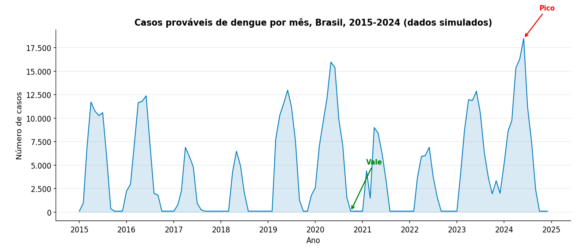

Módulo 2 | Aula 1
Análise Exploratória
Análise Visual: o primeiro passo
A forma mais direta e intuitiva de iniciar a análise exploratória é através de gráficos. O gráfico de linhas é a principal ferramenta para visualizar uma série temporal, onde o eixo horizontal (X) representa o tempo e o eixo vertical (Y) representa os valores da variável observada (ANTUNES; CARDOSO, 2015).
Figura 1 – Exemplo de Gráfico de Linhas para uma Série Temporal.

Fonte: Elaborado pelo autor (2026).
Interpretando um Gráfico de Linhas
Ao observar um gráfico de linha de uma série temporal como o da Figura 1, podemos extrair informações valiosas:
É possível comparar o comportamento da variável em diferentes momentos. No gráfico, podemos ver que o número de casos em 2024 foi significativamente maior do que nos anos anteriores.
O gráfico revela os pontos de máximo (picos) e mínimo (vales) da série, que podem corresponder a epidemias, surtos ou períodos de baixa ocorrência de um evento. O pico em 2024 é claramente visível.
A "rugosidade" da linha indica a variabilidade dos dados. Uma linha muito irregular sugere alta variação de um período para o outro.
Um exemplo clássico é a análise da série histórica de mortalidade por doenças do aparelho circulatório, onde o gráfico de linhas pode revelar uma tendência de queda ao longo das décadas, mas com picos de mortalidade nos meses de inverno de cada ano (ANTUNES; CARDOSO, 2015).